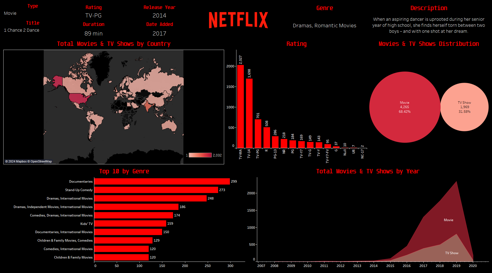

Netflix Dashboard using Tableau
This project aims to clean and analyze Netflix movies and TV shows data in order to find trends and patrons.
Tools used:
- MS Excel
- Data Manipulation
- Data Cleaning
- Tableau Prep
- Tableau Desktop
Observations:
- Total movies since 2008: 4,265.
- Total TV Shows since 2008: 1,969.
Key findings:
- The year 2019 was the year with the highest movies and TV shows added since 2008.
- Subsequently, 2020 was one of the years with the least added shows since 2015.
- The country with the largest number of Movies & TV shows added is the USA.
- Globaly, 68.42% of the total titles added are Movies.
- The top 3 genres around the tiles added to the platform are Documentaries, Stand-up Comedy and Dramas/International Movies.
Download report in twb format.